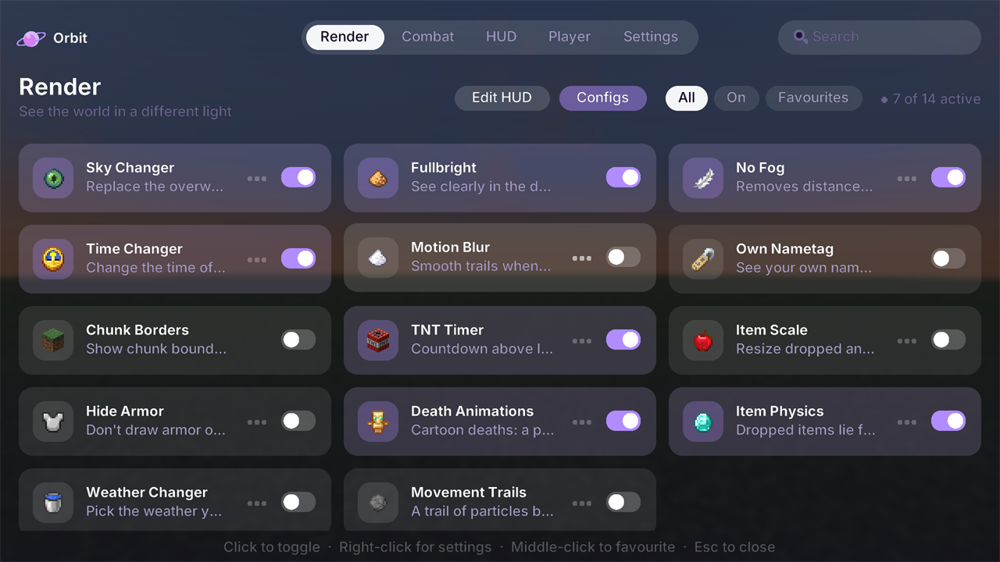
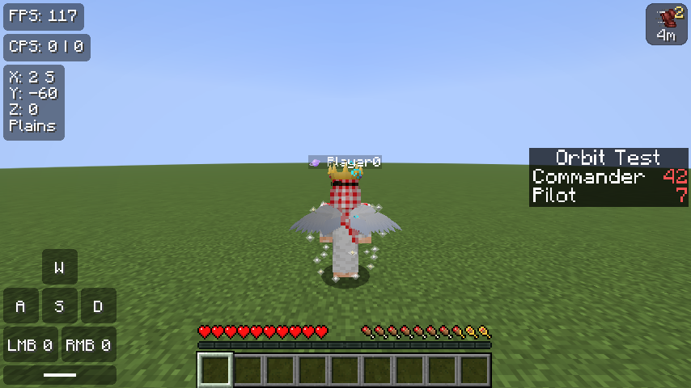

🛰️
65 Orbit mods in-game
Zoom, Freelook, Motion Blur, Crosshair Painter, Sky Changer, Item Physics, Hitboxes, Waypoints, Clips and more. Right Shift opens them all.
Try the menu here →
Free Minecraft launcher & client
Orbit sets up Java, Fabric and the fastest performance mods for you — then adds 60+ built-in mods, PvP tools, cosmetics your friends can see, and a clean new look for the whole game.

Features
No mod hunting, no setup guides. Start Orbit, press Launch, play — the launcher, the mods and the look of the whole game come in one download.
Zoom, Freelook, Motion Blur, Crosshair Painter, Sky Changer, Item Physics, Hitboxes, Waypoints, Clips and more. Right Shift opens them all.
Try the menu here →
Hats, wings, auras and pets — a fox on your shoulder, a baby dragon next to you. Other Orbit players see it too.

The right Java, Fabric and an FPS pack — set up for you.
Mods, packs and shaders, installed in one click.
Tier tags from MCTiers and SubTiers, target HUD, combo counter, reach, damage numbers, pearl tracker and fight stats.
See who's online, chat and join their server.
Press F8 to save the last seconds as a video.
New main menu, pause menu and options, 9 skies — one follows day and night — and a drag-and-drop HUD designer.
Synced lyrics in the sky and "Playing Orbit" on Discord.
Updates install themselves. Nothing to do.
Try it
This is what Right Shift opens in the game. Go ahead and click around.
Just a preview — it doesn’t change your game. All mods →
Take a look

The main menu, in the same clean style as the launcher.
Get started
It installs in seconds and adds a desktop shortcut.
Use the account that owns Minecraft: Java Edition.
Orbit prepares everything and starts the game.
FAQ
Yes, completely.
Orbit is new and not code-signed yet, so Windows doesn't know it. In Edge, open the download menu (…), choose Keep → Keep anyway. When starting it, click More info → Run anyway. You only need to do this once — updates install by themselves. Only download Orbit from this site or our GitHub.
The Orbit mods run on Minecraft 1.21.11 with Fabric. The launcher can also start other versions and Forge, Quilt or NeoForge profiles.
Yes — sign in with the Microsoft account that owns Minecraft: Java Edition.
Both of you need a recent Orbit and a Microsoft account. If nobody was online for a while, give it up to a minute after joining.
Orbit's mods are visual and quality-of-life features. Every server has its own rules — check them if you're unsure.
Free, for Windows. Minecraft 1.21.11 — and updates itself.